systemPipeShiny
Author: Le Zhang, Daniela Cassol, Ponmathi Ramasamy, Jianhai Zhang, Gordon Mosher and Thomas Girke
Last update: 03 September, 2020
Source:vignettes/systemPipeShiny.Rmd
systemPipeShiny.Rmd
Introduction
systemPipeShiny(SPS) is a Shiny-based R/Bioconductor package that has two main purposes:
- To help non-programmers like wet lab researchers on data analysis workflow management and downstream data visualizations with a graphical user interface(GUI).
- An user friendly framework for both beginners and advanced developers to fast extend with more visualization options(more plot types) and to quickly deploy the app to a Shiny sever.
You can try our demo at here. There are 5 different interactive tutorials embedded on the demo that you can follow(right upper corner). Each tutorial covers a major topic of SPS and show how you can interactive with app.
This vignette introduces main features and functionalities of SPS. Due to size limit, a full version of users’ manual will be later updated at SytemPipeShiny-book which will include more small demos, screenshots, and gif illustrations.
Motivation
SPS is originally designed as a GUI extension for the R workflow environment tool systemPipeR(SPR) to help users prepare a workflow and understand the workflow structure in an interactive way. Later, SPS is enriched with other utilities, like the visualization part. Therefore, we decide to move SPS as a stand-alone package.
Quick start
Install
To install SPS:
if (!requireNamespace("BiocManager", quietly = TRUE)) install.packages("BiocManager") BiocManager::install("systemPipeR/systemPipeShiny", build_vignettes = TRUE, dependencies = TRUE)
If you are on Linux, you also need(use Ubuntu as example):
sudo apt-get install libv8-dev
sudo apt-get install libssl-dev
sudo apt-get install libcurl4-openssl-devlibcurl4-openssl-dev may not be required for Ubuntu > 18.04.
Depending on the Linux distributions, command can be slightly different.
Start the app
Before starting with SPS, you need to create a SPS project:
## [SPS-INFO] 2020-09-03 00:48:35 Start to create a new SPS project
## [SPS-INFO] 2020-09-03 00:48:35 Create project under /tmp/RtmpyXQNqG/SPS_20200903
## [SPS-INFO] 2020-09-03 00:48:35 Now copy files
## [SPS-INFO] 2020-09-03 00:48:35 Create SPS database
## [SPS-INFO] 2020-09-03 00:48:35 Created SPS database method container
## [SPS-INFO] 2020-09-03 00:48:35 Creating SPS db...
## [SPS-DANGER] 2020-09-03 00:48:35 Db created at '/tmp/RtmpyXQNqG/SPS_20200903/config/sps.db'. DO NOT share this file with others
## [SPS-INFO] 2020-09-03 00:48:35 Key md5 bac1bd4c2366205f681148771fa0d02c
## [SPS-INFO] 2020-09-03 00:48:35 SPS project setup done!sps_dir <- file.path(sps_tmp_dir, glue("SPS_{format(Sys.time(), '%Y%m%d')}"))
Here for building the vignette we are not switching to the app directory and are using a temp directory, in a real case, you shouldn’t store you SPS project in a temp directory. Just use the following instead:
spsInit()By default, you will get a folder created under your current working directory, the name is SPS_ + today's date in ISO 8601 format, e.g. SPS_20200903
Note: all SPS date or time stamp objects use ISO 8601 format
By default, your working directory should be set inside that project folder automatically. If you are using Rstudio, global.R file will be opened for you. This is the only file that you need to make custom change if there is any. Now you can just run the app by type shiny::runApp() in console or click on the 
Run App button on top right corner of the any these 3 files in Rstudio. In your global.R, scroll down to the bottom, you should see:
sps_app <- sps(vstabs = "", server_expr = { msg("Custom expression runs -- Hello World", "GREETING", "green") })
This is the SPS main function. You can load/unload tabs by providing tab IDs in vstabs argument, like c("tab1", "tab2). See config/tabs.csv in your project folder for what tabs IDs can be load and other tab information. Currently you can only load/unload visualization tabs, type of vs; core tabs(core) and workflow tabs (wf) are loaded automatically. You can run additional server code by passing it to server_expr argument. If the expression is multiple-lined, use {} to wrap them.
SPS structure
App directory structure
When a SPS project is created, you would expect the directory contains:SPS_xx/ ├── server.R | ├── global.R | Most important server, UI and global files, unless special needs, `global.R` is the only file you need to edit manually ├── ui.R | ├── deploy.R | Deploy helper file ├── config | Important app config files. Do not edit them if you don't know │ ├── sps.db | SPS database │ ├── sps_options.yaml | SPS default option list │ └── tabs.csv | SPS tab information ├── data | App example data files │ ├── xx.csv ├── R | All SPS additional tab files and helper R function files │ ├── tab_xx.R ├── README.md ├── results | No in use for this current version, you can store some data been generated from the app │ └── README.md └── www | Internet resources ├── about | About tab information │ └── xx.md ├── css | CSS files │ └── sps.css ├── img | App image resources │ └── xx.png ├── js | Javascripts │ └── xx.js ├── loading_themes | Loading screen files │ └── xx.html └── plot_list | Image files for plot gallery └── plot_xx.jpg
App UI structure
SPS provides two core components – workflow management and data visualization. The UI is designed as a dashboard(Fig 1). Individual components are classified into two categories of tabs (Fig 1. a-b).
The app UI structure can be understood as following(Fig 2). Users first need to choose either the workflow or visualization part to start with. Workflow part helps users to prepare data analysis workflow files in systemPipeR(SPR) format. Visualization part helps users to make different types of plots, take interactive snapshot of plots and combine/compare different plots on the “Canvas” workbench.
To start, click on the “Workflow Management” or “Visualization” on the left navigation bar will direct you to the workflow or visualization main page. There will be some general summary and instructions.
UI details(for users)
Workflow management
Workflow management helps you to prepare a data analysis workflow files in SPR format or can be used in other similar compatible workflow environments. Files include the metadata(targets) file, workflow step file(Rmarkdown format) and a workflow config file. Each of these files are prepared in a SPS tab. You can find them at the left side navigation bar. SPS helps users to check the formats and requirements of each file. Users can click on the button on the page to check for problems. If everything is correct, a pop-up message will show to users or if anything is wrong, a detailed window will pop up to indicate errors.
In the upcoming version of SPS, users can directly run a workflow on the app, but for now users need to download these files and copy them to a SPR project and run from command line or R. You can download these files by clicking .
To see how your file preparation status, you can also open up the progress tracker.
Targets file
In SPR environment, the metadata file is also called the targets file. The Targets tab in SPS will help you to prepare this file(Fig3. A). The targets file has 2 parts: header and data. Header should start with # and you can edit it or add new lines in the editing box. Data is loaded as table, and you can also edit, right-click to add/remove records. If you are on local mode, the left-side panel will also show targets statistics and can check the file existence of your selected column.
Workflow file
A workflow file is a file that defines workflow steps. In SPR, this is provided as a R markdown file, so you need to prepare a file with .Rmd extension or download one template from SPR. Once your have uploaded or used the example, you can see the workflow steps in a tree-like structure(Fig3. B). The step levels in SPR are defined by the hash tag # level in Rmd, the same way as the tile level in a markdown file. For example, text and code under a single # title means this is a top level step, text and code under ## title is a secondary sub step …
To choose the steps you want to run, check them inside the “Choose the steps you want” section. If there are some substeps under a major step, you can click the triangle button to expand and choose substeps.
If at least one step is checked, the 4 buttons in “Choose the steps you want” will be enabled.
- Save your chosen steps and download as a new workflow file.
- A workflow diagram show the order of execution of steps you choose.
- The preview of what the workflow R markdown file look like when it is rendered, but no code is executed.
- Add to a workflow task, will be useful in future.
Note: Skip(uncheck) some steps may cause the workflow fail to run, read more SPR instructions
Configuration File
SPR uses a yaml file to control some workflow configurations. It is automatically been generated when you create a SPR project and normally you don’t need to change anything. Here the config tab just provides a place you can edit the config file and download it back to a SPR project.
Data Visualization
Tabs
There are two types of data visualization(VS) tabs: data tab and plot tab. A data tab is where you prepare plotting data, including different preprocess options. Depending on the data tab and preprocess options you choose, you will be given different plot tab options.
You should first going to the VS main tab by clicking Visualization and read the instructions there.
There are two ways to make a plot:
- Begin with a data tab: If you know have run some data analysis workflows and have obtained results but don’t know what you can plot from these results, browse the table on visualization main tab. The table is sorted by workflows as rows. Based on the data type you have, you can click on the data type in the table, you will jump to the corresponding data preparation tab and you will see what plots you can make after data preparation.
- Begin with a plot tab: If you already know what plots you want, there is a gallery on visualization main tab. You can click on the plot you want and it will jump to the plot tab directly. On the redirected plot tab, you will see to make this plot what input data need to be prepared. By choosing under the Data Preparation, you will go to a data tab and once you have prepared the required data, you will be guided back to this plotting tab to make the plot.
You can take a look of the VS table and VS gallery on the VS main page by clicking “Visualization” on the left navigation bar (Fig.4).
All VS tabs has a start-up button which will first check for packages requirements. If you don’t have the required package for the tab, there will be a pop-up window telling you how to install the required packages. In addition to package checks, plot tabs will also check for required plotting data. Depending on missing or unqualified data, you will see different error messages on the bottom right corner. See SPS logging in for more information. If everything is good, you will still see a green message and the main tab UI will show up and you can continue.
Data tabs
Once you have passed the package checks, you should see the data tab main UI. Please read the instructions on the top of each tab for how to prepare your data and data format requirements. All SPS data tabs come with an example data set, and if you are not sure what data to prepare, you can first switch to the example data set and play with it. When you are familiar with the tab, you can upload your own data set.
Note: Upload file selection can be different depending on the mode, see App options
After you have used the example or uploaded the example data, the data table will be displayed in the Input Data section. Depending on what you have uploaded and the file format, you may need to change the file delimiter and the comment character. They look like following:
The table will be displayed like this:
 Figure 5. Data tab input table
Figure 5. Data tab input table
You can filter data by key words or by range if the column is numeric. There are some other options on the top-left corner where you can copy data to clipboard, export as csv, Excel and other functions. Editing the table content is technically possible but disabled over here, because one should not edit large data table by hand and workload will be heavy for the sever. SPS is not designed for this purpose. Please edit the input data in a professional data editing tool before upload.
When you are satisfied with the input data, you can preprocess the filtered data by selecting a preprocess method and hit the “Preprocess” button to start. The preprocess takes place in the server-side. When it is done, you will see some green messages on the right-bottom corner. Otherwise, you will see orange warning boxes or red error boxes telling you the details.
Once the preprocess is done, different plot options will show up as a gallery that is similar to the one on the VS main tab(Fig.4), but is only limited to a few possible plots.
What kinds of preprocess methods, how many possible plotting options available are purely depend on the tab developers. Read instructions on the top of each tab will give you better glues of what is possible on the tab.
Plot tabs
When you have prepared data from a data tab and jump to a plotting tab. Again, read the instructions(Description) on the top first.
There will be a “Data preparation” section right below the “Description” section(Fig. 6). Most plots only require one type of data input. If that is the case, select which tab your data in coming from by the dropdown menu under “select which tab(s) your data is coming from:”. Even if a plot tab only has one type data input, but you need to clarify where the data is coming from, because different data tabs can prepare the same kind of input data. See Figure 2 for details of relationship between data and plot tabs.
Some plot tabs require more than one type of data input. For example, experimental data and sample information(metadata), just like Figure 6. In this case, you need to go to different data tab(s) and prepare other set(s) of data like usual. The “data preparation” should clearly state how many data sets you need to have and where you can prepare them.
If you are not sure if you have the required data set(s), click on the button and SPS will check/validate required data for you. If everything is okay, there will be a green message on the right-bottom corner and you should see some plotting control elements appear on the “Plotting” section. These are plot control UIs. They control how the plot is generated, such as what the plot title is, where the legend location is, what colors to use for samples, and more. These part is defined by the tab developer, so they should give you instructions in “Description” section.
 Figure 6. Plot Data Preparation
Figure 6. Plot Data Preparation
Click on the button the first time will generate the plot and you can tweaking different plot control options to change your plot looking. You can drag the plot by  on the bottom-right corner of the plot to resize your plot to unlimited height and maximum your screen width.
on the bottom-right corner of the plot to resize your plot to unlimited height and maximum your screen width.
- You can then right click to save the plot as an image if the plot is rendered by ggplot or some base R plots.
- Most SPS example/built-in plots are rendered by Plotly and they are interative plots, so you cannot right-click. Instead, there is the icon on plot you click to download the screenshot.
Both methods take the screenshot of your plot “what you see is what you get”, meaning the height and width will be the same as what you see on SPS when you download the screenshot. Of course, you can use some other third-party screenshot tools as well.
Click on the button the second time and on will take a “snapshot” of current plot. You should see the message on bottom-right to info you that a snapshot of current plot has been sent to snapshot.
Snapshot and Canvas
Snapshot and Canvas are part of SPS VS functionality and are designed for users to
- combine different kinds of plots from different plot tabs.
- compare the same plot at different state(under different plot options)
Snapshot
When a snapshot is taken from a plot tab, it records the plot states and control options and can later be displayed on the Canvas. One example will be: there is a plotting option to choose how many samples on the plot and then you choose 5 and take a snapshot1. When this snapshot1 is displayed on the Canvas, there will be 5 samples. Later, you change the sample to 10 and take snapshot2. At this point, snapshot1 and snapshot2 will both be displayed on Canvas and one plot has 5 samples one has 10. These two plots on the Canvas are now independent from each other and both independent to the original plot on the plot tab. Whatever the additional change you make on the plot tab, these two snapshots will not be affected.
It is similar to a screenshot of a plot, but this “screenshot” is still interactive if the plot is rendered by an interactive plotting library, like a plotly plot, or at least can be a resizable vector image if it is rendered by base or ggplot2.
Manage snapshots
Snapshots can be managed by clicking (Snapshots ) on the very top banner of SPS app. There will be dropdown tab displayed(Fig.7).
- On top section:
- Left: your current snapshots
- Right: you can drag a snapshot to right side and click the destroy to permanently delete unwanted snapshots.
- Bottom section: You can download current snapshots in a compressed file and later upload it back to SPS. In this way, you can keep your snapshots and resume in a later time.
Note: Downloaded snapshots are encrypted for app security reasons. Each SPS project has its own encryption key, so you cannot upload snapshot files to a different SPS project. You need to contact the project owner to decrypt the snapshot file, use another project’s key to encrypt it and then it can work in another project. See developer section for more details.
Canvas
Canvas is a playground or a workbench where you can view all saved snapshots. Then you can resize, drag plots around to make a big figure. Figure 8 illustrates: compare plot snapshots from the same plot tab but with different sample size or groups.
- Resize: Every plot on Canvas has a
 icon on the bottom-right corner of the plot. Left-click and drag it to the size you want.
icon on the bottom-right corner of the plot. Left-click and drag it to the size you want. - Reposition: When you mouse hovers on any plot snapshot, the blue title will appear, drag on the title will move the entire snapshot.
- Exclude snapshots:
- Hover on any plot snapshot, when title appears, click on the “X” icon will temporarily remove the snapshot from current Canvas, but when you click on , it will come back.
- Drag snapshots from “Current Snashots” box to “Snapshots excluded” box will prevent them to render on Canvas even when you refresh the Canvas. This still will not delete a snapshot. only Manage snapshots tab can delete a snapshot.
- Adding text: adding additional text like a figure title etc. will be supported in the upcoming release.
 Figure 8. Canvas
Figure 8. Canvas
Important features
Configuration
App options
App options in SPS are controlled by “SPS options”. These options can change app appearance, debugging level, server server behaviors, etc. The valid options can be found and change on the global.R file. They are similar to Shiny options, but unlike shiny options are single values, SPS options are passed using the Option(sps = list(...)) function in global.R as a group. To view all options and their default, valid values(’*’ means any value is okay):
viewSpsDefaults(appDir = sps_dir)
## mode: list(default = "local", other = "server")
## loading_screen: list(default = TRUE, other = FALSE)
## loading_theme: list(default = "vhelix", other = "*")
## use_crayon: list(default = TRUE, other = FALSE)
## verbose: list(default = FALSE, other = TRUE)
## dev: list(default = FALSE, other = TRUE)
## admin_page: list(default = FALSE, other = TRUE)
## admin_url: list(default = "admin", other = "*")
## warning_toast: list(default = TRUE, other = FALSE)To view a single option value, use spsOption(opt = "option_name"), to overwrite a single option, use spsOption(opt = "option_name", value = new_value).
Note:Don’t worry if you set some invalid values, on app start, sps() will check all SPS options, ignore unknown values and set invalid values back to default. You will see warning messages on console to tell you specifically what’s wrong with options.
| Option | Description | Default | Other |
|---|---|---|---|
| mode | running mode | “local” | “server” |
| warning_toast | show security warnings? | TRUE | FALSE |
| loading_screen | show loading screen? | TRUE | FALSE |
| loading_theme | loading screen theme | “vhelix” | any string |
| use_crayon | colorful console message? | TRUE | FALSE |
| verbose | more details for SPS functions? | TRUE | FALSE |
| dev | developer mode? add 2 template tabs | TRUE | FALSE |
| admin_url | admin_page query url | “admin” | any string |
some details:
- mode: this option will change how the upload files are selected.
- local: You can choose file from server side, and it is a direct link, no file will be copied to server. Most often used when you are on you own computer. It is still choosing files from the server side, because you are using your own computer as a Shiny server.
- server: Choose files from the client side, and upload as a temp file to the server.
- If you are on you own computer, there is no difference, but
localmode can avoid copy your files to temp. If you are deploying the app to cloud, please use server mode
- warning_toast: A toast pop-up message when you are under some dangerous options when app starts.
- loading_theme:
loading_screenmust beTRUE. Only one theme for now, we will add more in future. - use_crayon: Give you more information on debugging.
- admin_url: the admin page url , will be added in an upcoming version, a preview can be seen by adding “/?admin” to the end of app url, e.g. “https://tgirke.shinyapps.io/systemPipeShiny/?admin”.
Tab configurations
Tabs are registered(defined) by the tabs.csv file under SPS project config folder. It contains information for all the tabs. Do not modify it if you don’t plan to build new tabs. See developer section for how to operate this file.
To control what tabs to appear(load/unload) on SPS, pass the tab IDs of tabs you want to see to vstabs = argument on sps()
tabs.csv has all the tab IDs. Under current version of SPS, you can only load/unload tabs in the “vs” type. Tabs under “core” and “wf” types are unable to change.
Progress tracking
A progress tracking panel is provided on each tab to notify users about run status. Tabs under workflow management shares the same progress panel and each VS tab has its own individual progress tracker.
The tracker is located on the top-right corner and by default it is collapsed. You can often it up by clicking the “-” icon. If you think this tracker is blocking your sight, you can drag it to anywhere you like. The example looks like below(draggable in the real app):
Workflow-prepare

Dual-end logging
Messages, warnings and errors from R functions are automatically captured and logged on both the server and client ends. The corresponding information can be displayed in a message box on bottom-right on SPS UI, see Figure 1.f. The same message will be logged to console as well.
Modular isolation
SPS is built on Shiny modules, which provides local scope isolation between each tab. Objects on one tab do not conflict with other tabs. They work like individual posts in a forum. SPS also supports global/between-tab scope interactions. Read more in developer section.
Extend SPS(for developers)
As a framework, SPS allows users to add/remove/customize individual tabs. At current version, you can only modify tabs in VS part(data tabs, plot tabs). Use newTabData to add a new data tab and newTabPlot for a plot tab. These functions will help you to create the tab file to the R folder in your SPS project and register tab information by adding records to config/tabs.csv. Most arguments are self-explanatory or can be easily understood by reading the the help file. Here are some important points:
-
tab_idmust start with “data_” for a data tab and “plot_” for a plot tab. - Augments with
xx_funcorxx_expruse non-standard evaluation, please do not add quotes. If you want to use quotes, setuse_string = TRUE - For expressions in SPS or Shiny, if you are expect to return an object, directly write the return object to the last line of the expression, instead of using
return(xxx). Expressions are not functions, you shouldn’t usereturn.
# use { a <- 1 + 1 a } # not { a <- 1 + 1 return(a) }
New data tab
newTabData(app_path = sps_dir, tab_id = "data_new", tab_displayname = "my first data tab", prepro_methods = list(makePrepro(label = "do nothing", plot_options = "plot_new")))
Add preprocess methods
The prepro_methods argument controls how many different methods a data tab have to preprocess the incoming data to meet the requirements of different plot tabs. prepro_methods expect a list of makePrepro results. Each makePrepro result is one preprocess option. When the tab runs, it will look like this(if I have 3 methods), for example:
pms <- list(makePrepro(method_id = "nothing", label = "Do nothing", vd_expr = spsValidate({ if (!is.data.frame(data_filtered)) stop("Incoming data is not a dataframe") }), pre_expr = { data_filtered }, plot_options = "plot_new"), makePrepro(method_id = "md1", label = "Method 1", vd_expr = spsValidate({ if (!is.data.frame(data_filtered)) stop("Incoming data is not a dataframe") if (!nrow(data_filtered) < 1) stop("Data must have at least 1 row") }, pass_msg = "method 1 validation pass"), pre_expr = { if (is.numeric(data_filtered[, 1])) data_filtered[1, 1] = 1 data_filtered }, plot_options = "plot_new"), makePrepro(method_id = "md2", label = "Method 2", vd_expr = spsValidate({ if (!is.data.frame(data_filtered)) stop("Incoming data is not a dataframe") if (!ncol(data_filtered) < 2) stop("Data must have at least 2 columns") }, pass_msg = "method 2 validation pass"), pre_expr = { if (is.numeric(data_filtered[, 2])) data_filtered[2, 1] = 1 data_filtered }, plot_options = "plot_new"))
Note: An object called data_filtered is created for you which contains the user filtered data table. You can directly use it in your expression like above.
newTabData(app_path = sps_dir, tab_id = "data_new", tab_displayname = "my first data tab", prepro_methods = pms)
## [SPS-INFO] 2020-09-03 00:48:36 Write to file /tmp/RtmpyXQNqG/SPS_20200903/R/tab_vs_data_new.R
## Styling 1 files:
## /tmp/RtmpyXQNqG/SPS_20200903/R/tab_vs_data_new.R ℹ
## ────────────────────────────────────────────────
## Status Count Legend
## ✓ 0 File unchanged.
## ℹ 1 File changed.
## x 0 Styling threw an error.
## ────────────────────────────────────────────────
## [SPS-INFO] 2020-09-03 00:48:39 Now register your new tab to config/tab.csv
## [SPS-INFO] 2020-09-03 00:48:39 New tab created!On UI side, when you run SPS, your options will be displayed like this:
New plot tab
newTabPlot(app_path = sps_dir, tab_id = "plot_new", tab_displayname = "my first plot tab", plot_data = list(makePlotData(dataset_label = "Data from my new tab", receive_datatab_ids = "data_new", app_path = sps_dir)))
Add plot data
The plot_data argument in newTabPlot is very similar to prepro_methods in newTabData. It controls how many different unique data sets a plot tab requires and where(which data tabs) these data sets can come from. plot_data expect a list of makePlotData results. Each makePlotData result specify one unique input data set and source data tab options. For example, we want to have a plot tab that needs 2 unique data set, one for metadata, one for some numeric data, we can do:
# We don't have the metadata tab, need to create one first. newTabData(tab_id = "data_meta", tab_displayname = "Meta Data", app_path = sps_dir)
## [SPS-INFO] 2020-09-03 00:48:39 Write to file /tmp/RtmpyXQNqG/SPS_20200903/R/tab_vs_data_meta.R
## Styling 1 files:
## /tmp/RtmpyXQNqG/SPS_20200903/R/tab_vs_data_meta.R ℹ
## ─────────────────────────────────────────────────
## Status Count Legend
## ✓ 0 File unchanged.
## ℹ 1 File changed.
## x 0 Styling threw an error.
## ─────────────────────────────────────────────────
## [SPS-INFO] 2020-09-03 00:48:42 Now register your new tab to config/tab.csv
## [SPS-INFO] 2020-09-03 00:48:42 New tab created!# now we can use `makePlotData` method for metadata pd <- list(makePlotData(dataset_id = "meta", receive_datatab_ids = "data_meta", dataset_label = "Meta data", vd_expr = spsValidate({ if (is.data.frame(mydata$meta)) TRUE else stop("Metadata needs to be a dataframe or tibble") }), app_path = sps_dir), makePlotData(dataset_id = "data", receive_datatab_ids = "data_new", dataset_label = "Meta data", vd_expr = spsValidate({ if (is.data.frame(mydata$data)) TRUE else stop("Data needs to be a dataframe or tibble") }), app_path = sps_dir))
Note: An object named mydata$ + dataset_id is created for you which contains the received data. You can directly use it in your expression like above.
newTabPlot(app_path = sps_dir, tab_id = "plot_new", tab_displayname = "my first plot tab", plot_data = pd)
## [SPS-INFO] 2020-09-03 00:48:42 Write to file /tmp/RtmpyXQNqG/SPS_20200903/R/tab_vs_plot_new.R
## Styling 1 files:
## /tmp/RtmpyXQNqG/SPS_20200903/R/tab_vs_plot_new.R ℹ
## ────────────────────────────────────────────────
## Status Count Legend
## ✓ 0 File unchanged.
## ℹ 1 File changed.
## x 0 Styling threw an error.
## ────────────────────────────────────────────────
## [SPS-INFO] 2020-09-03 00:48:45 Now register your new tab to config/tab.csv
## [SPS-INFO] 2020-09-03 00:48:45 New tab created!You can specify more than one tab IDs in receive_datatab_ids argument, meaning this type of input data can be prepared by more than one data type, receive_datatab_ids = c("data_df1", "data_df2").
The rendered UI will look similar to Fig.6 or you can check the online demo.
an empty tab file
If you don’t like the structure of SPS template tabs or want to load data other than a regular tabular data, like a rds file contains a S4 object(you can only load tabular data files with default templates). You can create your own tab structure, and it is totally supported in SPS. In newTabData or newTabPlot, change empty = TRUE and specify tab_id, display_name and author. Leave all other arguments as defaults.
newTabData(tab_id = "data_empty", tab_displayname = "an empty one", author = "me", empty = TRUE)
It will create an empty tab file with empty UI and server function. You can write any legit shiny code inside. Again, SPS is built on Shiny modules, so each tab is like a small sandbox and variables, objects do not conflict with other tabs.
Run new tabs
There is one more final step before new tabs can be displayed on SPS. You need to specify you want to add these custom new tabs in sps() function:
Remove a tab
Use removeSpsTab(tab_id = "tabID") to remove a tab. You can check config/tabs.csv to see what are the tabs and tab IDs you have. tab_id only allows one character string but allows regular expression match. By default, if it matches more than one ID, functions aborts, unless you change multiple = TRUE. The function will ask for your confirmation if any match is found, and you can directly proceed without confirmation by force = TRUE, if you want to do it in a programmatic way or use it in a loop. Once the function runs, it will remove both records in config/tabs.csv and tab files in R folder.
# for example, to remove the new tab we just created removeSpsTab("data_new", force = TRUE, app_path = sps_dir)
## [SPS-INFO] 2020-09-03 00:48:45 Matched tab(s): data_new
## [SPS-INFO] 2020-09-03 00:48:45 1 tabs removed from tabs.csv
## [SPS-INFO] 2020-09-03 00:48:45 Now remove file /tmp/RtmpyXQNqG/SPS_20200903/R/tab_vs_data_new.R
## [SPS-INFO] 2020-09-03 00:48:45 Job completeThere are 3 main types of tabs in current version of SPS: core, wf and vs. core tabs are SPS framework essential tabs, wf tabs are Workflow Management components, and you are only allowed to modify vs tabs.
Naming
- tabs:
- All store in
Rfolder; - All should be named as
tab_xx.R. If this tab is a sub tab, name ittab_type_id.R, e.g. a tab for visualization new data type will betab_vs_data_xxx.R, a new plot tab will betab_vs_plot_xxx.R.
- All store in
- functions:
- In each tab file, there should be one
UIfunction and oneserverfunction and give both functions and name space the same ID as the file name: e.g. a file namedtab_vs_data_sub1.R, UI function will bedata_sub1UI, server will bedata_sub1Server.
- In each tab file, there should be one
Other useful developer features
Logging and error handling
Simple logging
The simplest logging is done by msg function. It prints out a message on console in [Level] + time + message format. By default, if you only provide the message, it uses message function; if you specify the level to be “warning” or “error”, it will use R base warning and error function; other levels uses cat method. Therefore, you can use msg to generate warnings or stop a function.
msg("message")
## [INFO] 2020-09-03 00:48:45 messagemsg("a warning", level = "warning")
## Warning: [WARNING] 2020-09-03 00:48:45 a warning## Error :
[ERROR] 2020-09-03 00:48:45 an errorIf you set the SPS option use_crayon = TRUE, your message will be colorful.
[INFO] 2020-09-03 00:48:45 message level
[WARNING] 2020-09-03 00:48:45 warning level
[ERROR] 2020-09-03 00:48:45 error level
spsinfo, spswarn, and spserror are similar to msg but with [SPS-] prefix.
Duel-end logging and error handling
If you want to catch exceptions and display them to your users, SPS provides shinyCatch for such purpose. Exceptions can by any message, warning or error. shinyCatch is good for:
- Catch any exceptions, log on server side console and displayed as a toast message on bottom-right corner on client UI.
- Prevent shiny app to crash because of errors.
- Catch exceptions but continue other code.
For example, if you have some Shiny expression and don’t want the Shiny session to crash because of errors, you can wrap your expression inside shinyCatch(use shiny = TURE for a real Shiny app). Once the exception happens, you can block the rest of your code from being executed in a function or in the higher level expression.
# You should not see the message try({ shinyCatch(stop("error"), shiny = FALSE, blocking_level = "error") cat("Blocked\n") })
## [SPS-ERROR] 2020-09-03 00:48:45 error
## Error : Or you catch the exception but still allow other code to be executed.
# You should see the message try({ shinyCatch(stop("error"), shiny = FALSE) cat("Not blocked\n") })
## [SPS-ERROR] 2020-09-03 00:48:45 error
## Not blockedSPS classes
SPS classes are similar to other Shiny classes, which are R6 classes.
SPS snapshots container
To save the snapshots UI and server logic, SPS uses plotContainer class to store the information. It should be saved in global environment sps_plots <- plotContainer$new(). By default, it is created in the global.R file and you don’t need to change anything.
Adding the plot snapshot UI and server is usually operated on the plot tabs by plotContainer$addUI() and plotContainer$addServer() functions. You can see the example usage by running the example on help ?plotContainer or check the usage in a new plot tab by newTabPlot().
spsDb and SpsEncrytion
You may have noticed there is a sps.db file in config folder. This file is a SQLite database which on current version stores some a table of meta information of your SPS project, like project creation date, and a table of binary data which includes the encryption key of snapshots.
SpsEncrytion inherits all methods from spsDb, so if there is any need to modify the database, you can just use SpsEncrytion. By default, it needs to be save in global environment sps_enc <- spsEncryption$new(). This is written for you in the global.R file.
-
spsDballows you to create database, query/modify/delete/add records. -
SpsEncrytionenables you to view/change the encryption key, and encrypt/decrypt any file you desire.
All downloaded SPS snapshot files are encrypted by SpsEncrytion. It uses RSA256 key pair, so each SPS project will have its own key pair, which means uploading snapshot file from one project to another is not possible. If you want to have a snapshot running in another SPS project, use spsEncryption$decrypt() to decrypt the snapshot file and contact the owner of the other SPS project. Ask them to use their key to encrypt the file spsEncryption$encrypt() and the snapshot file can be uploaded as usual to that SPS app.
Note: Encrypting the snapshot file is because the snapshot file contains server code which can be modified easily by any one and running arbitrary code uploaded by users can be dangerous.
Change SPS options
You can customize the default SPS options and alternative valid options by editing config/sps_options.yaml. Please follow this format:
new_option
default: xx
other: [xx, xx]* character in “other” field tell SPS option parser that any value is allowed.
Useful shiny compoents and functions
We have made most functions in SPS very generic. In case you see some great SPS components and want to use them in other Shiny apps other than under the SPS framework, check the SPS help index help(package = systemPipeShiny) or see the function classification on our website. Functions in “SPS framework functions” should only be used inside SPS project. Functions in all other categories can be used in other Shiny apps.
Visualization
systemPipeShiny offers interactive data visualization to users and supports graphics in workflow reports. In systemPipeShiny’s visualization tab, there are many features for data visualization of various statistical results. Users can upload different input data types, and apply various options for preprocessing those datasets. Users can then create downstream analysis plots, as per the type of uploaded data. Some available plotting options include: bar plots of differentially expressed genes, heat maps, dendrogram, principal component analysis (PCA) plots, and multidimensional scaling (MDS) plots. Depending on the nature of the plots, there are also options to adjust the plot such as normalizing the data. Additionally, systemPipeShiny provides users with plot templates and plotting functions that they can then customize according to their necessities for visualization.
Table with all exported functions
| Function Name | Description |
|---|---|
exploreDSS |
Transform raw read counts using the package |
exploreDDSplot |
Scatterplot of transformed counts reads |
PCAplot |
Plots PCA from a count matrix |
MDSplot |
Plots MDS from a count matrix |
tSNEplot |
Plots t-Distributed Stochastic Neighbor embedding |
GLMplot |
Plots Dimension Reduction with GLMplot |
heatMaplot |
Plots Hierarchical Clustering HeatMap |
MAplot |
MA-Plot from base means and log fold changes |
volcanoplot |
Plots a Volcano Plot from an DEG analyis results |
hclustplot |
Plots Hierarchical Clustering Dendrogram |
Data transformations and visualization
To show the effect of the transformation, in the figure below we plot the first sample against the second, first simply using the log2 function, and then using the VST and rlog-transformed values. For the log2 approach, we need to first estimate size factors to account for sequencing depth, and then specify normalized=TRUE. Sequencing depth correction is done automatically for the vst and rlog.
## Targets file targetspath <- system.file("extdata", "targets.txt", package = "systemPipeR") targets <- read.delim(targetspath, comment = "#") cmp <- systemPipeR::readComp(file = targetspath, format = "matrix", delim = "-") ## Count table file countMatrixPath <- system.file("extdata", "countDFeByg.xls", package = "systemPipeR") countMatrix <- read.delim(countMatrixPath, row.names = 1) ## Plot exploreDDSplot(countMatrix, targets, cmp = cmp[[1]], preFilter = NULL, samples = c(3, 4))
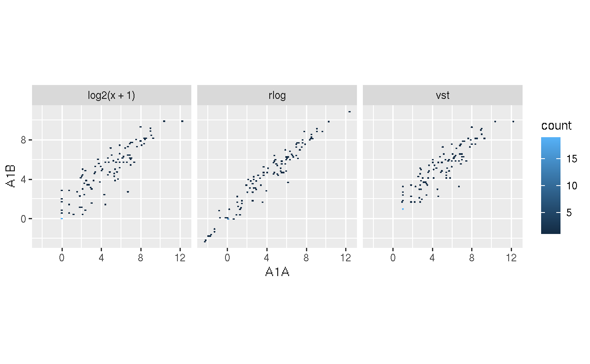
exploreDDSplot(countMatrix, targets, cmp = cmp[[1]], samples = c("M1A", "M1B"), save = TRUE, filePlot = "transf_deseq2.pdf")
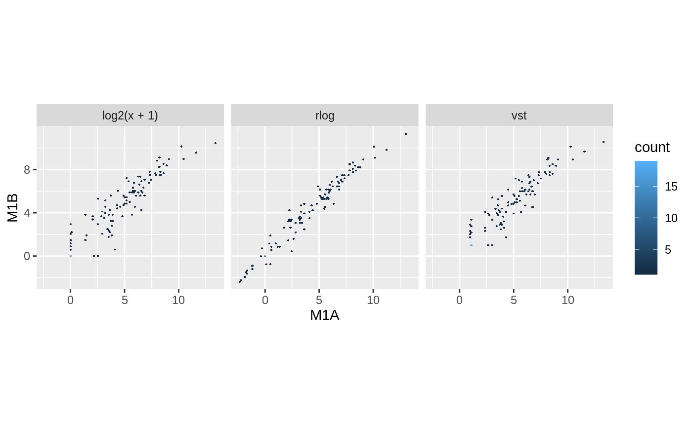
## Plot Correlogram exploreDDSplot(countMatrix, targets, cmp = cmp[[1]], preFilter = NULL, samples = c("M1A", "M1B"), scattermatrix = TRUE)
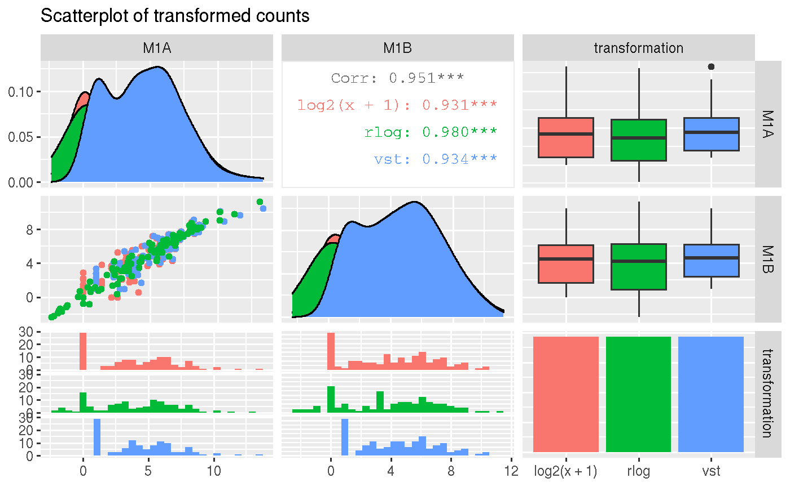
Dendrogram
A dendrogram of the results of hierarchical clustering performed with the hclust function can be created with the hclustplot function. The sample-wise Spearman correlation coefficients are computed, and then the results are transformed to a distance matrix before the hierarchical clustering is performed. The count data frame can be transformed with the rlog or Variance-stabilizing Transformation (vst) methods from the DESeq2 package, or can be done without transformation.
## Data transformation exploredds <- exploreDDS(countMatrix, targets, cmp = cmp[[1]], preFilter = NULL, transformationMethod = "rlog") ## Plot hclustplot(exploredds, method = "spearman")
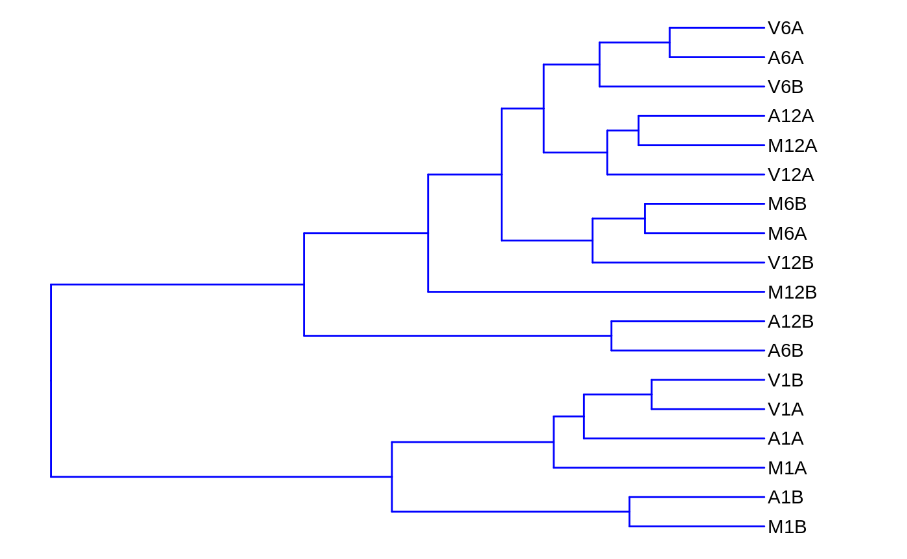
hclustplot(exploredds, method = "spearman", savePlot = TRUE, filePlot = "cor.pdf")

Heatmap
A heatmap of the results of hierarchical clustering performed with the hclust function can be created with the heatMaplot function. The sample-wise Spearman correlation coefficients are computed before hierarchical clustering. The count data frame can be transformed with the rlog or Variance-stabilizing Transformation (vst) methods from the DESeq2 package, or can be done without transformation.
Samples
exploredds <- exploreDDS(countMatrix, targets, cmp = cmp[[1]], preFilter = NULL, transformationMethod = "rlog") heatMaplot(exploredds, clust = "samples")
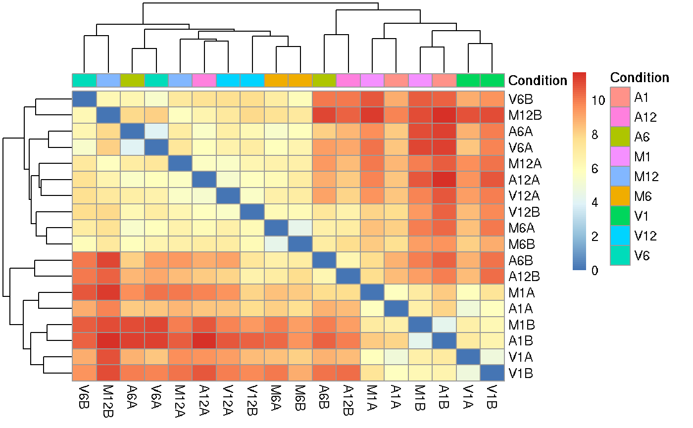
heatMaplot(exploredds, clust = "samples", plotly = TRUE)
Individuals genes identified in DEG analysis
### DEG analysis with `systemPipeR` degseqDF <- systemPipeR::run_DESeq2(countDF = countMatrix, targets = targets, cmp = cmp[[1]], independent = FALSE) DEG_list <- systemPipeR::filterDEGs(degDF = degseqDF, filter = c(Fold = 2, FDR = 10))

### Plot heatMaplot(exploredds, clust = "ind", DEGlist = unique(as.character(unlist(DEG_list[[1]]))))
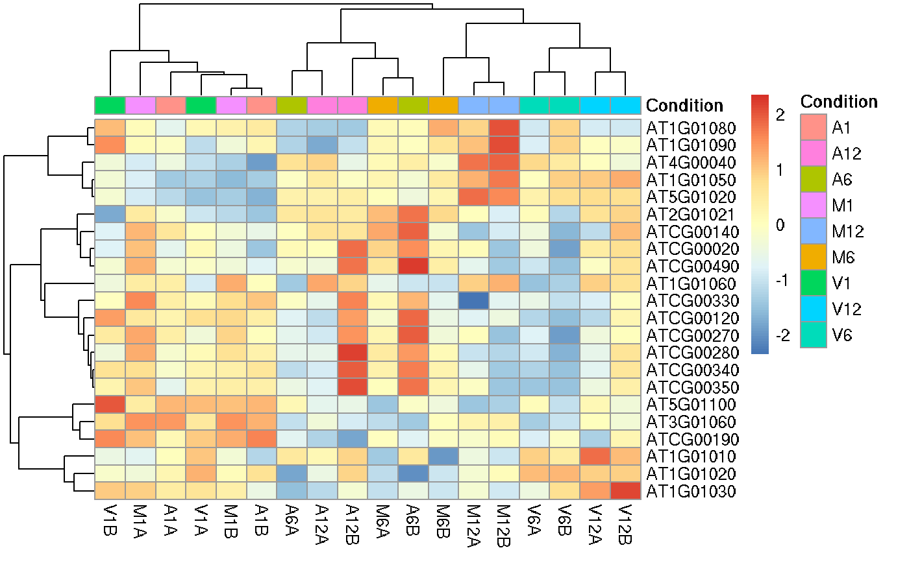
heatMaplot(exploredds, clust = "ind", DEGlist = unique(as.character(unlist(DEG_list[[1]]))), plotly = TRUE)
PCA plot
A Principal Component Analysis (PCA) plot can be created using the PCAplot function which uses the DESeq2 package. The input data frame can be transformed with the rlog or Variance-stabilizing Transformation (vst) methods from the DESeq2 package, or can be done without transformation.
## Data transformation exploredds <- exploreDDS(countMatrix, targets, cmp = cmp[[1]], preFilter = NULL, transformationMethod = "rlog") ## Plot PCAplot(exploredds, plotly = FALSE)
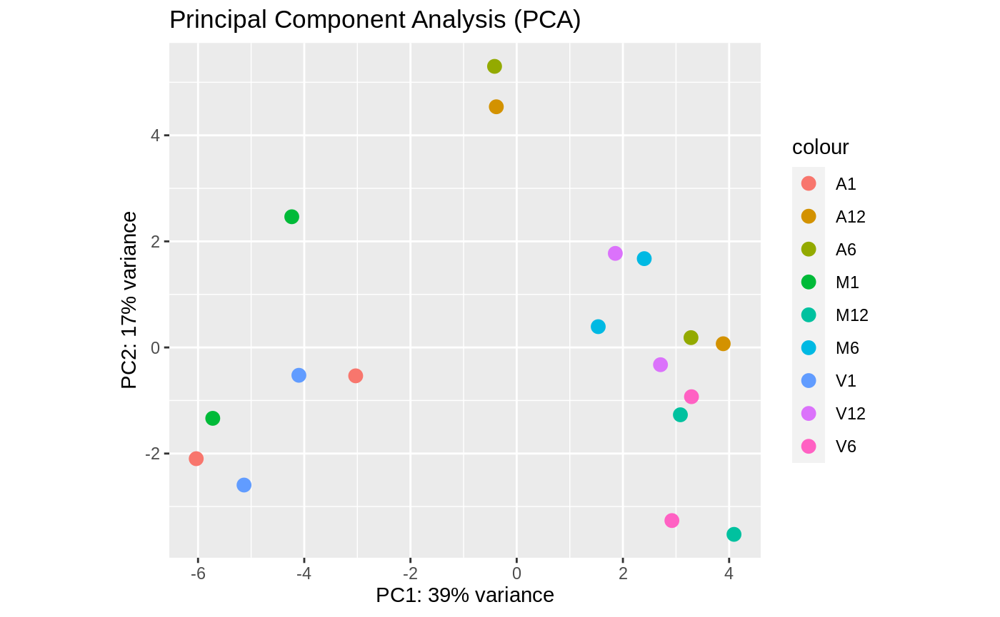
PCAplot(exploredds, plotly = TRUE)
In addition, generalized principal component analysis (GLM-PCA) for dimension reduction of non-normally distributed data can be plotted with the GLMplot function (???). This option does not offer transformation or normalization of raw data.
## Data transformation exploredds <- exploreDDS(countMatrix, targets, cmp = cmp[[1]], preFilter = NULL, transformationMethod = "raw") ## Plot GLMplot(exploredds, plotly = FALSE)
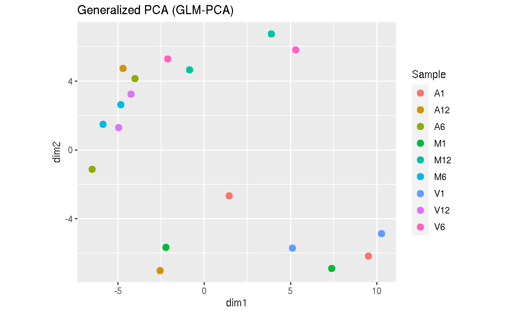
GLMplot(exploredds, plotly = FALSE, savePlot = TRUE, filePlot = "GLM.pdf")
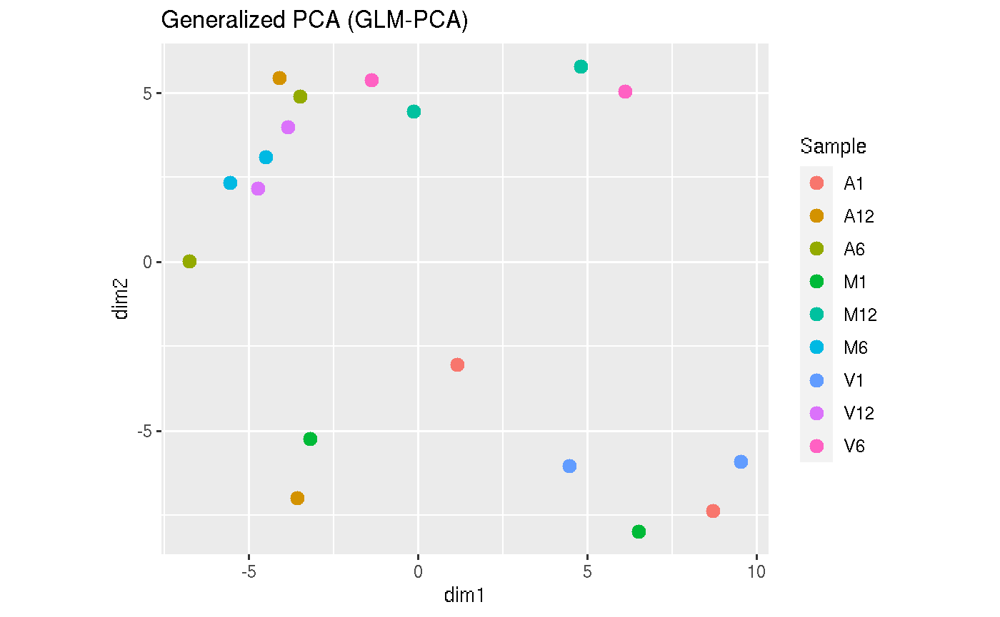
MDS plot
A Multidimensional Scaling (MDS) plot can be created using the MDSplot function. The input data frame can be transformed with either the rlog or Variance-stabilizing Transformation (vst) methods from the DESeq2 package. From the input data, it computes a spearman correlation-based distance matrix and performs MDS analysis on it.
exploredds <- exploreDDS(countMatrix, targets, cmp = cmp[[1]], preFilter = NULL, transformationMethod = "rlog") MDSplot(exploredds, plotly = FALSE)
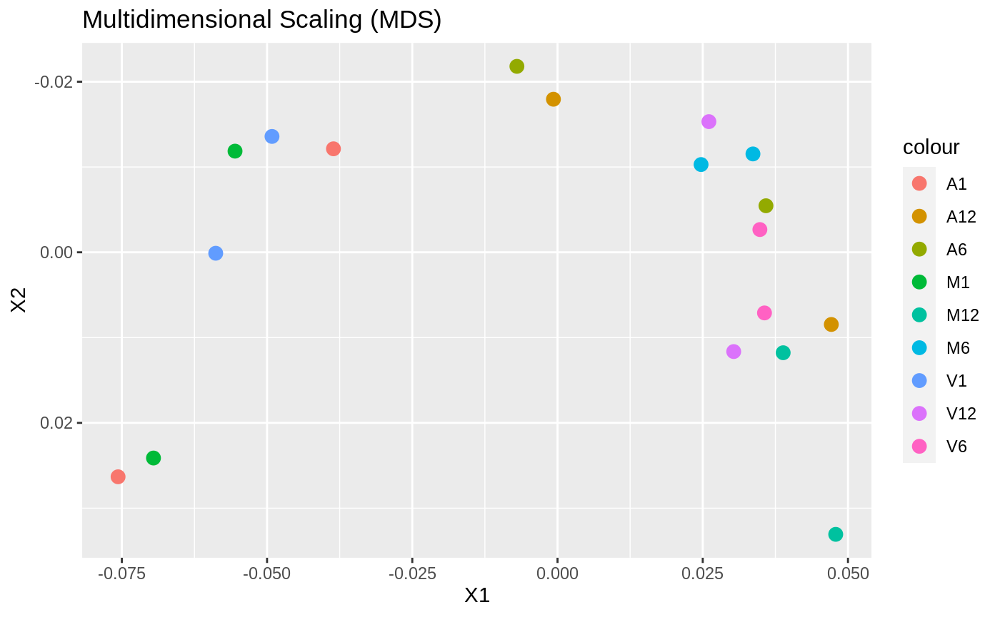
t-SNE plot
A Barnes-Hut t-Distributed Stochastic Neighbor Embedding (t-SNE) plot can be created using the tSNEplot function, which uses the Rtsne package (???) to compute t-SNE values. The function removes duplicates in the input data frame, sets a seed for reproducibility, performs an initial PCA step. The function also allows for a user-set perplexity value for the computation.
targetspath <- system.file("extdata", "targets.txt", package = "systemPipeR") targets <- read.delim(targetspath, comment = "#") cmp <- systemPipeR::readComp(file = targetspath, format = "matrix", delim = "-") countMatrixPath <- system.file("extdata", "countDFeByg.xls", package = "systemPipeR") countMatrix <- read.delim(countMatrixPath, row.names = 1) set.seed(42) ## Set a seed if you want reproducible results tSNEplot(countMatrix, targets, perplexity = 5)
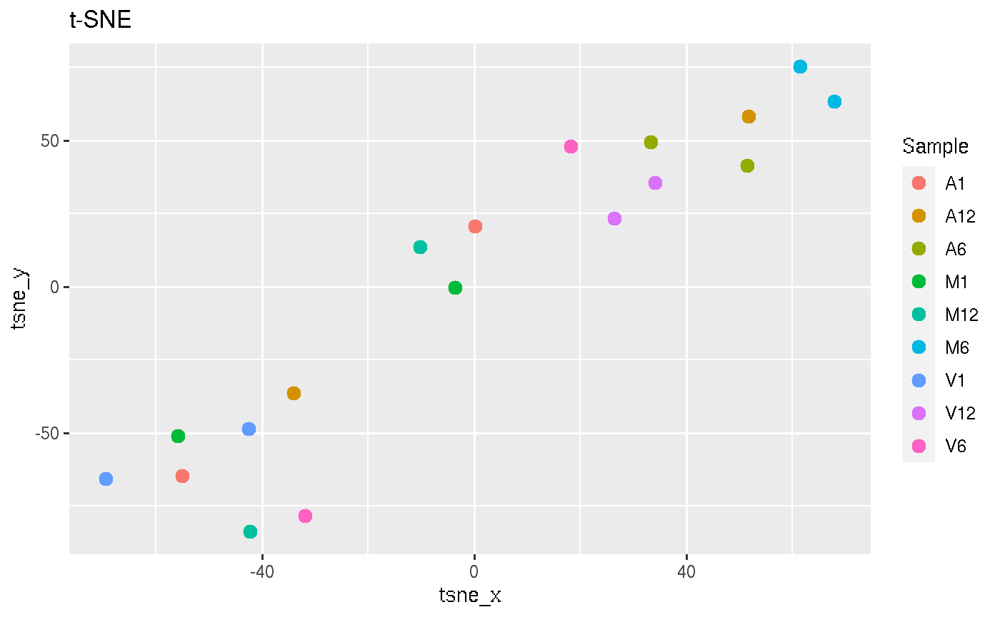
MA-Plot
An MA plot is an application of a Bland–Altman plot for visual representation of genomic data. The plot visualizes the differences between measurements taken in two samples, by transforming the data onto M (log ratio) and A (mean average) scales, then plotting these values.
exploredds <- exploreDDS(countMatrix, targets, cmp = cmp[[1]], preFilter = NULL, transformationMethod = "raw") MAplot(exploredds, plotly = FALSE)
## [1] "removing NA from the results"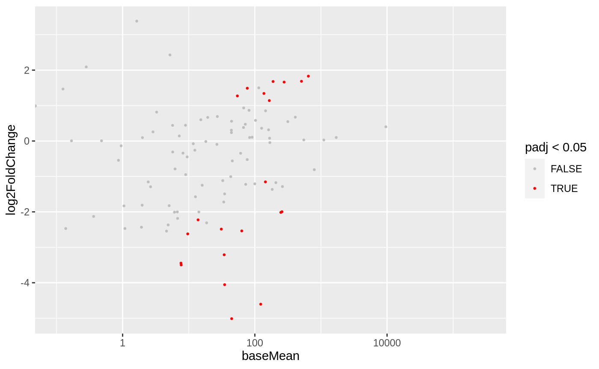
MAplot(exploredds, plotly = TRUE)
## [1] "removing NA from the results"Volcano plot
A volcano plot of DEGs data frame can be plotted using the function volcanoplot. Using the resulting data frame from run_edgeR or run_deseq2, the function plots a volcano plot using False Discovery Rate and Log Fold Change thresholds for the sample comparison specified by the user.
### DEG analysis with `systemPipeR` degseqDF <- systemPipeR::run_DESeq2(countDF = countMatrix, targets = targets, cmp = cmp[[1]], independent = FALSE) DEG_list <- systemPipeR::filterDEGs(degDF = degseqDF, filter = c(Fold = 2, FDR = 10))

## Plot volcanoplot(degseqDF, comparison = "M12-A12", filter = c(Fold = 2, FDR = 10))
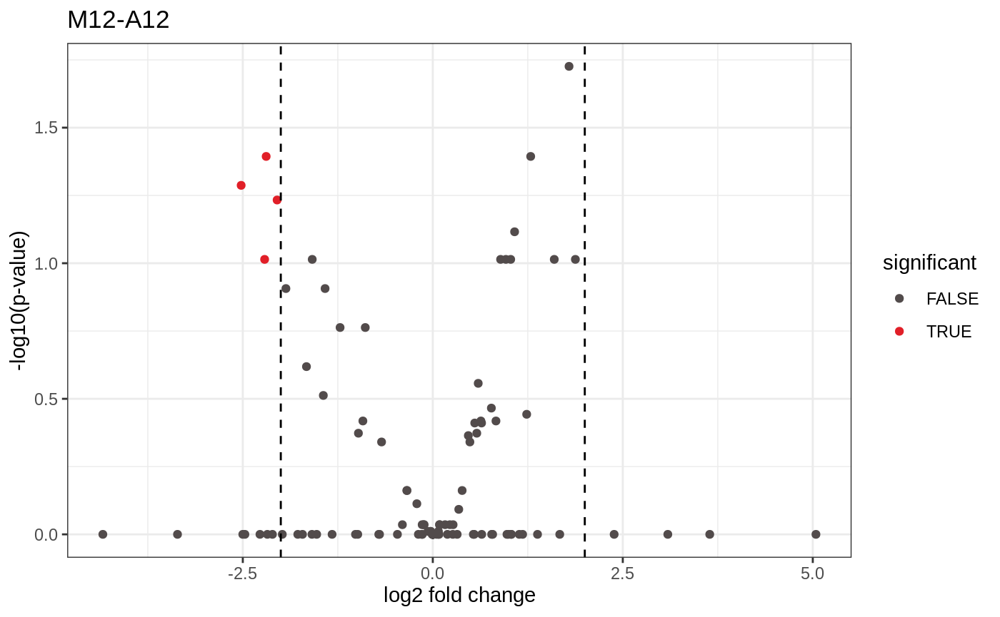
volcanoplot(degseqDF, comparison = "M12-A12", filter = c(Fold = 1, FDR = 20), genes = "ATCG00280")
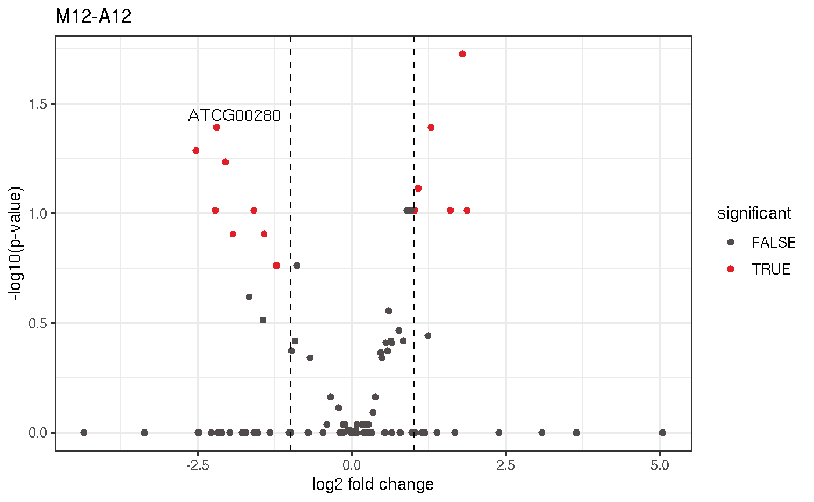
Barplot
A barplot for analysis of differentially expressed genes (DEGs) can be plotted using functions deg_edgeR or deg_deseq2. The function deg_edgeR uses the edgeR package (???) to create an edgeR data frame. Alternatively, the function deg_deseq2 uses the DESeq2 package (???) to create an DESeq2 data frame. Using the filterDEGs function, it filters and plots DEG results for up and down regulated genes in a barplot.
How to deploy the application
There is a deploy.R file in the SPS project root and you can use it to deploy the app to shinyapps.io. You can use this file to set up your account and deploy the app. SPS is a deploy-ready framework. If you set up your account correctly, you can deploy it as soon as the project is created. It is recommended to create -> test/run -> deploy a Shiny app from Rstudio and follows this instruction.
Version Information
## R version 4.0.2 (2020-06-22)
## Platform: x86_64-pc-linux-gnu (64-bit)
## Running under: Ubuntu 18.04.5 LTS
##
## Matrix products: default
## BLAS: /usr/lib/x86_64-linux-gnu/blas/libblas.so.3.7.1
## LAPACK: /usr/lib/x86_64-linux-gnu/lapack/liblapack.so.3.7.1
##
## locale:
## [1] LC_CTYPE=en_US.UTF-8 LC_NUMERIC=C
## [3] LC_TIME=en_US.UTF-8 LC_COLLATE=en_US.UTF-8
## [5] LC_MONETARY=en_US.UTF-8 LC_MESSAGES=en_US.UTF-8
## [7] LC_PAPER=en_US.UTF-8 LC_NAME=C
## [9] LC_ADDRESS=C LC_TELEPHONE=C
## [11] LC_MEASUREMENT=en_US.UTF-8 LC_IDENTIFICATION=C
##
## attached base packages:
## [1] stats graphics grDevices utils datasets
## [6] methods base
##
## other attached packages:
## [1] systemPipeShiny_0.99.0 shinyTree_0.2.7
## [3] ggplot2_3.3.2 stringr_1.4.0
## [5] shiny_1.5.0 magrittr_1.5
## [7] glue_1.4.1 assertthat_0.2.1
## [9] BiocStyle_2.16.0
##
## loaded via a namespace (and not attached):
## [1] shinydashboard_0.7.1
## [2] R.utils_2.9.2
## [3] tidyselect_1.1.0
## [4] RSQLite_2.2.0
## [5] AnnotationDbi_1.50.1
## [6] htmlwidgets_1.5.1
## [7] grid_4.0.2
## [8] BiocParallel_1.22.0
## [9] Rtsne_0.15
## [10] pushbar_0.1.0
## [11] base64url_1.4
## [12] munsell_0.5.0
## [13] codetools_0.2-16
## [14] DT_0.14
## [15] systemPipeR_1.22.0
## [16] miniUI_0.1.1.1
## [17] shinytoastr_2.1.1
## [18] withr_2.2.0
## [19] colorspace_1.4-1
## [20] Biobase_2.48.0
## [21] Category_2.54.0
## [22] knitr_1.29
## [23] rstudioapi_0.11
## [24] stats4_4.0.2
## [25] shinyWidgets_0.5.3
## [26] labeling_0.3
## [27] GenomeInfoDbData_1.2.3
## [28] hwriter_1.3.2
## [29] farver_2.0.3
## [30] bit64_0.9-7.1
## [31] pheatmap_1.0.12
## [32] rprojroot_1.3-2
## [33] batchtools_0.9.13
## [34] vctrs_0.3.2
## [35] treeio_1.12.0
## [36] generics_0.0.2
## [37] xfun_0.15
## [38] BiocFileCache_1.12.0
## [39] R6_2.4.1
## [40] markdown_1.1
## [41] GenomeInfoDb_1.24.2
## [42] locfit_1.5-9.4
## [43] rsvg_2.1
## [44] bootstraplib_0.1.0.9000
## [45] bitops_1.0-6
## [46] reshape_0.8.8
## [47] shinyAce_0.4.1
## [48] DelayedArray_0.14.1
## [49] promises_1.1.1
## [50] networkD3_0.4
## [51] scales_1.1.1
## [52] vroom_1.3.0.9000
## [53] debugme_1.1.0
## [54] gtable_0.3.0
## [55] rlang_0.4.7
## [56] genefilter_1.70.0
## [57] splines_4.0.2
## [58] rtracklayer_1.48.0
## [59] lazyeval_0.2.2
## [60] shinyjqui_0.3.3
## [61] hexbin_1.28.1
## [62] brew_1.0-6
## [63] checkmate_2.0.0
## [64] BiocManager_1.30.10
## [65] yaml_2.2.1
## [66] crosstalk_1.1.0.1
## [67] GenomicFeatures_1.40.1
## [68] backports_1.1.8
## [69] httpuv_1.5.4
## [70] RBGL_1.64.0
## [71] tools_4.0.2
## [72] bookdown_0.20
## [73] ellipsis_0.3.1
## [74] jquerylib_0.1.2
## [75] RColorBrewer_1.1-2
## [76] BiocGenerics_0.34.0
## [77] Rcpp_1.0.5
## [78] plyr_1.8.6
## [79] progress_1.2.2
## [80] zlibbioc_1.34.0
## [81] purrr_0.3.4
## [82] RCurl_1.98-1.2
## [83] prettyunits_1.1.1
## [84] openssl_1.4.2
## [85] S4Vectors_0.26.1
## [86] SummarizedExperiment_1.18.2
## [87] ggrepel_0.8.2
## [88] fs_1.4.2
## [89] data.table_1.12.8
## [90] colourpicker_1.0
## [91] R.cache_0.14.0
## [92] matrixStats_0.56.0
## [93] hms_0.5.3
## [94] patchwork_1.0.1
## [95] shinyjs_1.1
## [96] mime_0.9
## [97] evaluate_0.14
## [98] xtable_1.8-4
## [99] XML_3.99-0.4
## [100] jpeg_0.1-8.1
## [101] IRanges_2.22.2
## [102] compiler_4.0.2
## [103] biomaRt_2.44.1
## [104] tibble_3.0.3
## [105] V8_3.2.0
## [106] crayon_1.3.4
## [107] R.oo_1.23.0
## [108] htmltools_0.5.0
## [109] GOstats_2.54.0
## [110] later_1.1.0.1
## [111] tidyr_1.1.0
## [112] geneplotter_1.66.0
## [113] aplot_0.0.5
## [114] DBI_1.1.0
## [115] formatR_1.7
## [116] dbplyr_1.4.4
## [117] MASS_7.3-51.6
## [118] rappdirs_0.3.1
## [119] ShortRead_1.46.0
## [120] Matrix_1.2-18
## [121] cli_2.0.2
## [122] glmpca_0.2.0
## [123] R.methodsS3_1.8.0
## [124] parallel_4.0.2
## [125] igraph_1.2.5
## [126] GenomicRanges_1.40.0
## [127] pkgconfig_2.0.3
## [128] pkgdown_1.5.1
## [129] rvcheck_0.1.8
## [130] GenomicAlignments_1.24.0
## [131] plotly_4.9.2.1
## [132] ggtree_2.2.4
## [133] annotate_1.66.0
## [134] XVector_0.28.0
## [135] AnnotationForge_1.30.1
## [136] VariantAnnotation_1.34.0
## [137] digest_0.6.25
## [138] graph_1.66.0
## [139] Biostrings_2.56.0
## [140] rmarkdown_2.4.0
## [141] tidytree_0.3.3
## [142] edgeR_3.30.3
## [143] GSEABase_1.50.1
## [144] curl_4.3
## [145] Rsamtools_2.4.0
## [146] rjson_0.2.20
## [147] lifecycle_0.2.0
## [148] nlme_3.1-148
## [149] jsonlite_1.7.0
## [150] BSgenome_1.56.0
## [151] desc_1.2.0
## [152] viridisLite_0.3.0
## [153] askpass_1.1
## [154] limma_3.44.3
## [155] fansi_0.4.1
## [156] pillar_1.4.6
## [157] lattice_0.20-41
## [158] GGally_2.0.0
## [159] shinyFiles_0.8.0
## [160] fastmap_1.0.1
## [161] httr_1.4.2
## [162] survival_3.2-3
## [163] GO.db_3.11.4
## [164] png_0.1-7
## [165] rhandsontable_0.3.7
## [166] bit_1.1-15.2
## [167] Rgraphviz_2.32.0
## [168] stringi_1.4.6
## [169] sass_0.2.0
## [170] rematch2_2.1.2
## [171] blob_1.2.1
## [172] DESeq2_1.28.1
## [173] latticeExtra_0.6-29
## [174] shinydashboardPlus_0.7.5
## [175] memoise_1.1.0
## [176] DOT_0.1
## [177] styler_1.3.2
## [178] dplyr_1.0.0
## [179] ape_5.4